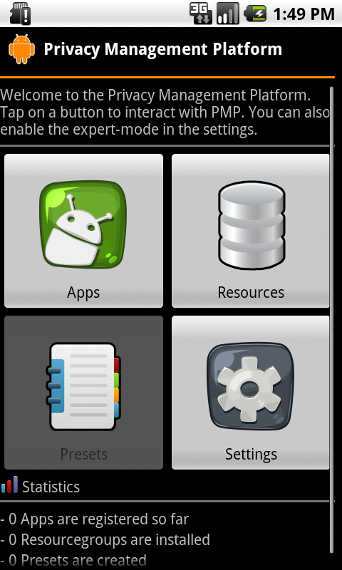
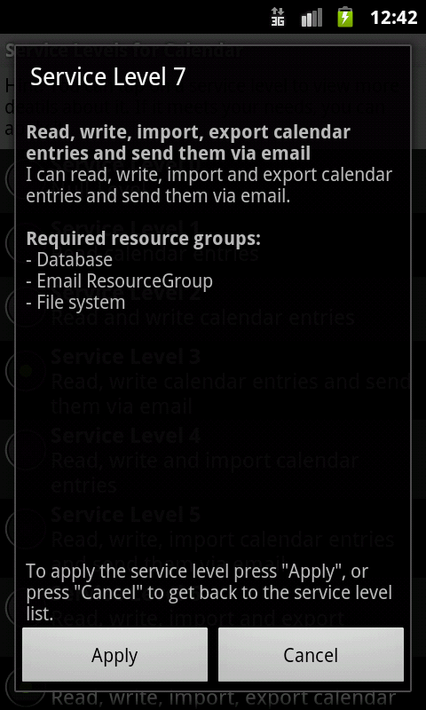
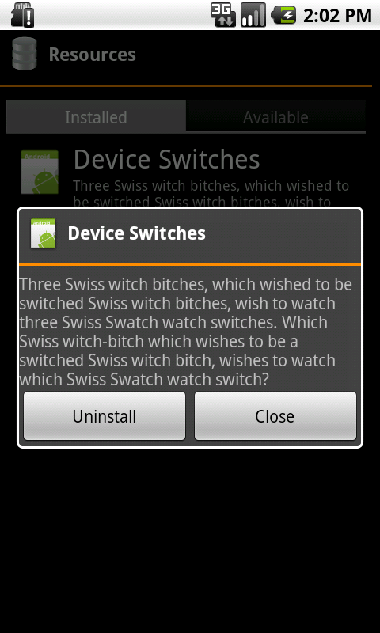

Einleitung
Zweck
Dieses stellt das Handbuch der "Privacy Management Platform". Es soll sowohl den Laien als auch den erfahrenen Benutzer und Entwickler bei der Verwendung der PMP unterstützen. Auf eine gute Verständlichkeit wird Wert gelegt.
Leserkreis
Das Handbuch richtet sich an folgende Lesergruppen:
- den unerfahrenen Benutzer
- den erfahrenen Benutzer
- den Entwicklern von Ressourcengruppen (für die PMP)
- den Entwicklern von Applikationen inkl. deren Service-Levels
- dem Kunden
- den Betreuern des Studienprojekts
Konventionen
In diesem Dokument werden mehrere Konventionen verwendet, um knapp, übersichtlich, lesbar und treffend zu sein:
- Für Überbegriffe wie Benutzer oder Entwickler wird das generische Maskulinum verwendet. Da die Deutsche Sprache hier keine zufrieden stellende Alternative kennt, sind damit selbstverständlich auch alle weiblichen Leserinnen angesprochen.
- In diesem Dokument wird die deutsche Sprache verwendet; dabei ist allerdings zu beachten, dass sich übernommene oder übersetzte Begriffe aus dem Englischen nicht vermeiden lassen. Diese werden dann jedoch grammatikalisch an die Deutsche Sprache angepasst.
- Ein Verweis in diesem Dokument auf andere Kapitel wird so dargestellt:
Gliederung
Der besseren Übersicht wegen unterteilt sich das Handbuch in die einzelnen Benutzergruppen:
- "" richtet sich an Benutzer, die die PMP verwenden möchten. Dieses Kapitel enthält eine Beschreibung aller im einfachen Modus () verfügbaren Funktionen, sowie eine Beschreibung der Funktionen, die erst im erweiterten Modus () verfügbar sind.
- "" richtet sich an Benutzer, die Ressourcengruppen oder Applikationen für die PMP entwickeln möchten. Der Unterabschnitt "" geht auf die Erstellung von Ressourcengruppen ein. Dagegen beschriebt "" wie Service-Levels definiert und in eigene Applikationen integriert werden können.
Grundbegriffe
Dieser Abschnitt erläutert einige Grundbegriffe die im Kontext der PMP verwendet werden.
Ressourcengruppen
Ressourcen bieten Anwendungen Zugriff auf die verschiedenen Funktionen eines Android-Gerätes. In der PMP werden einzelne, inhaltlich zusammengehörige Ressourcen in Ressourcengruppen zusammengefasst. Diese Gruppen könne dann auf dem Gerät installiert werden.
Jede Ressourcengruppe definiert mehrere so genannte Privacy-Levels. Diese können verschiedene Werte zugewiesen werden (etwa erlauben oder nicht). Abhängig vom gesetzten Wert ist ein Zugriff auf eine Funktion der Ressource möglich (ist etwa des Privacy-Level "Datei lesen" gesetzt, das Level "Datei schreiben" jedoch nicht, so erlaubt die Ressourcegruppe "Dateisystem" nur das Auslesen einer Datei, nicht jedoch das Schreiben in eine Datei).
Service-Level
Jede PMP-Applikation legt fest, welche Funktionen bestimmter Ressourcen sie benötigt und welche Dienste sie hierfür dem Benutzer anbietet. Diese Vereinbarung wird als Service-Level bezeichnet. Eine Applikation besitzt in der Regel mehrere Service-Levels.
Im Detail legt jedes Service-Level fest, welche Ressourcengruppen benötigt werden, und auf welchen Wert die zur Gruppe gehörigen Privacy-Levels gesetzt sein müssen. Wird ein Service-Level gewählt, so werden die Privacy-Levels auf die festgelegten Werte gesetzt, wodurch Zugriffe auf die zugehörigen Funktionen der Ressourcen möglich sind.
Das niedrigste Service-Level, das PMP-Applikationen stets anbieten, erlaubt diesen keinerlei Zugriff auf Ressourcen und damit auf kritische Bereiche des Geräts.
Systemanforderungen
Um PMP installieren und ausführen zu können, muss auf dem Zielgerät mindestens Android in der Version 2.1.1 installiert sein. Weitere Anforderungen werden vom Basissystem der PMP nicht gestellt. Es ist jedoch möglich, dass bestimmte Ressourcengruppen Funktion benötigen, die nicht auf allen Geräten verfügbar sind (z. B. aktive GSM-Verbindung oder GPS-Ortung). In der Beschreibung der jeweiligen Ressourcengruppe finden Sie in der Regel Informationen über deren Systemanforderungen.
Anwender
Dieser Abschnitt richtet sich an die Benutzer der PMP.
Installation
Die PMP wird wie eine gewöhnliche Android-Applikation installiert. Hierzu wird entweder die apk-Datei der PMP-Anwendung auf das Gerät übertragen, oder die PMP wird aus dem Android Market ausgewählt. Folgen Sie anschließend bitte den Anweisungen des Android-Betriebssystems.
Sprache
Die Beschriftung der Elemente der Benutzeroberfläche erfolgt in der Sprache, die als Geräte-Sprache in Android festgelegt ist. Gegenwärtig enthält die PMP nicht für jede Sprache eine passende Übersetzung. Sollte keine Übersetzung in der gewählten Gerätesprache vorhanden sein, erfolgt die Beschriftung der Benutzeroberfläche in englischer Sprache.
Da, wie bereits erwähnt, die Standard-Beschriftung auf Englisch erfolgt, wird auch in den Bildschirmfotos und bei der Benennung der Schaltflächen in den folgenden Abschnitten die englische Variante verwendet.
Hauptmenü
{kind=link}
Ausgangspunkt der Verwendung der PMP bildet das Hauptmenü, das sich beim Starten der Anwendung öffnet. Dieses bietet Ihnen Zugriff auf alle Funktionen der PMP:
- Verwalten aller installierter Applikationen über die Schaltfläche "Applications" (siehe ).
- Anzeigen aller installierten Ressourcengruppen über die Schaltfläche "Resources" (siehe ).
Darüber hinaus steht die Möglichkeit zur Verfügung, den Anwender-Modus zu ändern (siehe ). Gegenwärtig ist diese Funktion jedoch noch nicht integriert. Daher ist die entsprechende Schaltfläche nicht sichtbar.
Anwender-Modi
Die PMP lässt sich in zwei Modi betreiben: Im einfachen Modus (als Simple Mode bezeichnet), stehen dem Benutzer die wichtigsten Funktionen zur Verfügung. Werden alle Funktionen benötigt, lässt sich das System in den erweiterten Modus (Expert Mode) schalten.
Modus-Wechsel
Der Wechsel zwischen einfachem und erweitertem Modus erfolgt über die Schaltfläche "Expert Mode" auf dem Startbildschirm der PMP.
Befindet sich die PMP im erweiterten Modus, erscheint ein Häkchen im vorderen Bereich der Schaltfläche. Durch Antippen der Schaltfläche wird zwischen den Modi hin- und her gewechselt.
Einfacher Modus (Simple Mode)
Der einfache Modus ist auf Anwender mit geringen Kenntnissen angepasst. Daher enthält er nur die wichtigsten Funktionen um den Benutzer nicht zu überfordern.
Erweiterter Modus (Expert Mode)
Der erweiterte Modus gibt Zugriff auf alle Funktionen der PMP. Da sich daher unerfahrene Benutzer überfordert fühlen könnten, richtet sich dieser Modus an erfahrene Benutzer, die vollen Zugriff auf den Funktionsumfang haben möchten.
Die Abgrenzung zwischen den beiden Modi erfolgt in der nachfolgenden Beschreibungen durch Hinweise der Form "Expert Mode:". Die diesem Hinweis folgenden Funktionen sind ausschließlich im erweiterten Modus verfügbar.
Da der erweiterte Modus gegenwärtig nicht implementiert ist, wird auf ihn in dieser Version des Handbuchs nicht näher eingegangen.
Applikationen
Applikationen installieren
Die Installation von PMP-Applikationen unterscheidet sich nicht von der Installation gewöhnlicher Applikationen. Im Allgemeinen benötigen PMP-Applikationen selbst keine Zugriffsrechte auf System-Funktionen, da diese Zugriffe über die PMP-Ressourcengruppen erfolgen.
Applikationen deinstallieren
Da PMP-Applikationen in Bezug auf die Installation gegenüber anderen Applikationen keine Sonderstellung einnehmen, werde sie auch auf gleicher Weiße deinstalliert.
Installierte Applikationen anzeigen
Über die Schaltfläche "Applications" im Hauptmenü der PMP lassen sich alle momentan auf dem Gerät installierten PMP-Applikationen anzeigen.
Service-Levels einstellen
{kind=link}
Das Service-Level einer Applikation lässt sich auf zwei Arten einstellen:
- Beim ersten Starten der Applikation
- Über die Anzeige der installierten Applikationen in der PMP (siehe ) und anschließendem Antippen der gewünschten Applikation
In beiden Fällen wird derselbe Dialog angezeigt (siehe Bildschirmfoto). Einige Service-Levels können von Ressourcengruppen abhängen, die auf dem Gerät (noch) nicht installiert sind. Die zu diesen Service-Levels gehörenden Einträge werden ausgegraut angezeigt und können somit nicht ausgewählt werden.
Um deaktivierte Service-Levels verwenden zu können, müssen die von diesen benötigten Ressourcengruppen installiert sein (siehe ). Wurden die fehlenden Ressourcengruppen installiert, kann der Service-Level-Dialog erneut geöffnet und ein nun neu verfügbares Service-Level ausgewählt werden.
{kind=link}
Wurde ein Service-Level ausgewählt, so erscheint ein Dialog, über den das Setzen des Service-Levels bestätigt werden muss. Innerhalb dieses Dialogs werden weitere Informationen über das gewählte Service-Level angezeigt, wie z. B. die von diesem Service-Level benötigten Ressourcengruppen. Über "Apply" kann nun das Service-Level übernommen werden. Anschließend wird automatisch zum Hauptmenü der installierten Applikation gewechselt.
Viele Applikationen ermöglichen es dem Anwender, das Service-Level direkt zu ändern, wenn auf eine Funktion dieser Applikation zugegriffen, die vom aktuell gesetzten Service-Level nicht unterstützt wird.
Ressourcengruppen
Ressourcengruppen installieren

PMP-Ressourcengruppen werden in Form einer Android-Applikation, einer apk-Datei, ausgeliefert. Der erste Schritt der Installation unterscheidet sich daher nicht von der Installation gewöhnlicher Android-Applikationen: Die apk-Datei wird auf das Gerät übertragen und geöffnet oder die Ressourcengruppe wird aus dem Android Market ausgewählt.
Nach diesem Schritt muss sich die Applikation bei der PMP anmelden. Hierzu zeigt jede Ressourcengruppe beim ersten Starten einen Installations-Dialog (siehe Bildschirmfoto) an. Durch Antippen der Schaltfläche "Install" meldet sich die Ressourcengruppe bei der PMP an und kann anschließend von PMP-Applikationen verwendet werden.
Durch Betätigen der "Home"- oder "Zurück"-Taste kann der Installations-Dialog nach erfolgreicher Installation und Registrierung verlassen werden.
Ressourcengruppen deinstallieren
Wie bereits unter "" erwähnt, werden PMP-Ressourcengruppen ähnlich wie gewöhnliche Android-Applikationen ausgeliefert und installiert. Daher erfolgt auch die Deinstallation wie bei normalen Android-Applikationen: In der Anwendungsverwaltung von Android wird die zu deinstallierende Ressourcengruppe ausgewählt und über die Schaltfläche "Uninstall" vom Gerät entfernt.
Installierte Ressourcengruppen anzeigen
{kind=link}
Über die zweite Schaltfläche "Resources" im Hauptmenü der PMP lassen sich alle gegenwärtig auf dem Gerät installierten PMP-Ressourcengruppen anzeigen. Durch Antippen einer Ressource werden weitere Informationen über diese angezeigt.
Entwickler
Dieser Abschnitt richtet sich an erfahrene Benutzer, die die PMP um eigene Ressourcengruppen erweitern oder Anwendungen für die PMP erstellen möchten.
Ressourcen

Das Erstellen einer Ressourcengruppe und deren Ressourcen gliedert sich in folgende Schritte:
- Bestimmen und Implementieren einzelner Ressourcen (z. B. jeweils eine Ressource um eine Datei in verschiedenen Bereichen des Geräts zu lesen, schreiben oder zu löschen)
- Festlegen einer Ressourcengruppe (z. B. Dateisystemzugriff) und Hinzufügen der erstellten Ressourcen zu dieser
- Bestimmen und Implementieren der zu der erstellten Ressourcengruppe passenden Privacy-Levels (z. B. nur lesen, nur schreibe oder lesen und schreiben)
- Hinzufügen der Privacy-Levels zu der Ressourcengruppe
- Implementieren einer Anwendung, die die erstellten Ressourcengruppen enthält.
Alle für das Erstellen einer Ressourcengruppe benötigten Klassen befinden sich im Paket "de.unistuttgart.ipvs.pmp.resource" der API-Bibliothek.
Der PMP liegen mehrere Ressourcengruppen und deren Quellcode bei. Diese können als Referenz für das Erstellen eigener Ressourcengruppe verwendet werden.
Erstellen einer Ressource
Ressourcen bilden die Grundlage einer Ressourcengruppe. Jede Gruppe benötigt
mindestens eine Ressource. Die Basisklasse einer Ressource bildet
Resource.
Um eigene Ressourcen zu erstellen, wird diese erweitert. Anschließend muss
die Methode getAndroidInterface() implementiert werden.
Zunächst wird ein AIDL-Interface erstellt, das die für Anwendungen sichtbaren
Funktionen der Ressource beinhaltet (etwa Datei lesen). Nachdem das Android-SDK aus
diesem Interface automatisch ein Stub erstellt hat, wird dieses implementiert,
um die Funktionalität der Ressource zu liefern.
Die Aufgabe der Methode getAndroidInterface() besteht nun ausschließlich
darin, die Implementierung dieses Interface zurück zu geben, um hierdurch
Anwendungen Zugriff auf die Funktionen der Ressource zu bieten.
Über den Parameter wird der Name der Anwendung übergeben, die Zugriff auf
die Funktionen der Ressource verlangt. Dieser sollte an die Implementierung des
AIDL-Interface weitergereicht werden, damit diese prüfen kann, ob die
Anwendung zum Zugriff auf die einzelnen Funktionen berechtigt ist.
Erstellen eines Privacy-Levels
Jede Ressourcengruppe beinhaltet mehrere Privacy-Levels. Privacy-Levels
werden durch Erweitern der Klasse PrivacyLevel erstellt, wobei
alle abstrakten Methoden implementiert werden müssen. Um den
Implementierungsaufwand zu verringern, bietet die API für häufig wiederkehrende
Einsatzgebiete Standartimplementierungen an:
Für Wahrheitswerte
Wird ein Privacy-Level benötigt, das als Einstellungswert ausschließlich
einen Wahrheitswert ("Ja"/"Nein") erlaubt (z. B. "lesen erlauben"), so
sollte für das Privacy-Level die fertig implementierte Klasse
BooleanPrivacyLevel verwendet werden. Bei der Instanziierung
erwartet der Konstruktor als Parameter den Namen des Privacy-Levels
und als weiteren Parameter eine Beschreibung. Hierbei empfiehlt es sich,
den Namen und die Beschreibung des Privacy-Levels in die String-Ressource
auszulagern, um die Internationalisierung zu vereinfachen.
Resource r = context.getResources();
plOne = new BooleanPrivacyLevel(r.getString(R.string.pl_one),
r.getString(R.string.pl_one_desc));
plTwo = new BooleanPrivacyLevel(r.getString(R.string.pl_two),
r.getString(R.string.pl_two_desc));
Benutzerdefiniert
Sollte die Erstellung eines benutzerdefinierten Privacy-Levels erforderlich
sein, d. h. das Privacy-Level lässt sich nicht durch eine bestehenden
Implementierung realisieren, so lässt sich ohne weiteres ein eigenes
Privacy-Level implementieren. Hierzu muss die Klasse
PrivacyLevel erweitert und ihre abstrakten Methoden
implementiert werden. Eine Liste aller zu implementierenden Methoden und
deren Aufgaben entnehmen Sie bitte der API-Dokumentation.
Erstellen einer Ressourcengruppe
Die erstellten Ressourcen müssen einer Ressourcengruppe hinzugefügt werden.
Hierzu wird eine neue Klasse erstellt, die die Klasse ResourceGroup
erweitert. Die Klasse ResourceGroup besitzt einige abstrakte
Methoden die implementiert werden müssen.
Die zwei Methoden getName() und getDescription()
liefern dem Anwender den Namen der Ressourcengruppe und eine
Beschreibung dieser. Zwar wird den Methoden im Parameter die
Benutzersprache mit übergeben (ISO-639 Norm), aus Gründen der
Internationalisierbarkeit sollte dieser jedoch ignoriert werden und
stattdessen der Namen bzw. die Beschreibung aus der String-Ressource geladen
werden.
Damit Anwendungen auf die Ressourcengruppe zugreifen können, muss der Name
des Services, innerhalb dessen die Ressourcengruppe ausgeführt wird,
von der Gruppe geliefert werden können.
Hierzu dient die Methode getServiceAndroidName(), die diesen
Namen liefert. Wichtig ist hierbei, dass der von dieser
Methode gelieferte Wert mit der Angabe in der Android-Manifest-Datei
übereinstimmen. Andernfalls ist ein Zugriff auf die Gruppe nicht möglich.
(siehe ).
Um Komplikationen mit anderen Ressourcengruppen zu vermeiden, die
u. U. denselben Wert verwenden, sollte dieser auf den Namen des Basis-Paketes
gesetzt werden, unterhalb dessen sich alle Klassen der Applikation befinden
(Befinden sich alle Klassen unterhalb von
de.unistuttgart.ipvs.pmp.resources.filesystem, sollte der
Eintrag <action android:name="de.unistuttgart.ipvs.pmp.resources.filesystem" />
lauten).
Um auf eine erfolgreiche oder fehlgeschlagene Registrierung der
Ressourcengruppe in der PMP reagieren zu können, stehen die beiden
Callback-Methoden onRegistrationSuccess() und
onRegistrationFailed() zur Verfügung. onRegistrationSuccess()
wird aufgerufen nachdem die Registrierungsanfrage der Ressourcengruppe von
der PMP erfolgreich bearbeitet wurde. Wurde onRegistrationFailed()
vom System aufgerufen, konnte die Gruppe dem System nicht hinzugefügt werden.
Über den String-Parameter wird der Grund des Fehlschlags übermittelt.
Manifest-Datei
Damit die PMP mit der erstellten Ressourcengruppe kommunizieren kann,
muss in der Manifest-Datei der so genannte ResourceGroupService
eingetragen werden. Diesem Service wird ein action-Intentfilter
zugewiesen, der als Name denselben Wert enthält, wie er von der Methode
getServiceAndroidName() der ResourceGroup
zurück gegeben wird (siehe ).
Damit sich die Ressourcengruppe beim ersten Starten bei der PMP registrieren
kann, muss im Namensattribut des Hauptactivities (action-Intentfilter "MAIN",
category-Intentfilter "LAUNCHER")
de.unistuttgart.ipvs.pmp.resource.ResourceGroupActivity eingetragen werden.
Beispiel
Unter Berücksichtigung des oben Erwähnten, könnte eine Ressourcengruppe wie folgt aussehen:
public class FileSystemResourceGroup extends ResourceGroup {
public static final String SERVICE_NAME =
"de.unistuttgart.ipvs.pmp.resources.filesystem";
private final Context context;
public FileSystemResourceGroup(Context context) throws Exception {
super(context);
// Store the service' context, because we will need it later
this.context = context;
...
}
@Override
public String getName(String locale) {
return context.getResources().getString(R.string.rg_name);
}
@Override
public String getDescription(String locale) {
return context.getResources().getString(R.string.rg_desc);
}
@Override
protected String getServiceAndroidName() {
return SERVICE_NAME;
}
@Override
public void onRegistrationSuccess() {
Log.d("Registration was successfull");
}
@Override
public void onRegistrationFailed(String message) {
Log.d("Registration failed: " + message);
}
}
Die zugehörige Manifest-Datei (bereiche, die sich abhängig von der erstellten Ressourcengruppe verändern können, sind kursiv dargestellt):
<?xml version="1.0" encoding="utf-8"?>
<manifest ...>
...
<application ...>
...
<activity android:label="@string/app_name"
android:name="de.unistuttgart.ipvs.pmp.resource.ResourceGroupActivity">
<intent-filter>
<action android:name="android.intent.action.MAIN" />
<category android:name="android.intent.category.LAUNCHER" />
</intent-filter>
</activity>
<service android:exported="true"
android:name="de.unistuttgart.ipvs.pmp.service.resource.ResourceGroupService">
<intent-filter>
<action android:name="de.unistuttgart.ipvs.pmp.resourcegroups.filesystem" />
</intent-filter>
</service>
...
</application>
</manifest>
Hinzufügen der Ressourcen zur Gruppe
Innerhalb der erstellten Ressourcengruppe werden durch Aufruf der
Methode registerResource() die erstellten Ressourcen der
Gruppe zugeordnet. Um einen späteren Zugriff auf die einzelnen Ressourcen
zu ermöglichen, wird neben der Referenz auf die Ressource noch ein String-Kürzel
mit übergeben. Dieses Kürzel sollte in eine Konstante ausgelagert werden um
Fehler beim Zugriff durch Tipp-Fehler oder einen veränderten Wert auszuschließen.
Es muss darauf geachtet werden, dass das String-Kürzel eindeutig ist.
Eine bereits registrierte Ressource wird überschrieben, sollte eine
Ressource mit gleichem Kürzel hinzugefügt werden.
Beinhaltet die Gruppe sehr viele Ressourcen, sollte über eine Auslagerung der Ressourcen-Instanziierung und der String-Konstanten in eine separate Klasse nachgedacht werden.
public class FileSystemResourceGroup extends ResourceGroup {
...
public static final String RESOURCE_ONE = "resOne";
public static final String RESOURCE_TWO = "resTwo";
...
public FileSystemResourceGroup(Context context) throws Exception {
super(context);
...
registerResource(RESOURCE_ONE, new ResourceOne());
registerResource(RESOURCE_TWO, new ResourceTwo());
...
}
...
}
Hinzufügen der Privacy-Levels zur Gruppe
Ähnlich der Ressourcen werden die erstellten Privacy-Levels durch
registerPrivacyLevel() der Gruppe hinzugefügt.
Auch hier wird zur späteren Referenzierung ein String-Kürzel mit angegeben, das
ebenfalls in eine Konstante ausgelagert werden sollte und eindeutig sein
muss.
Da eine Gruppe viele Privacy-Levels enthalten kann, kann auch hier eine Auslagerung der Objekt-Instanziierung in eine eigene Klasse sinnvoll sein.
public class FileSystemResourceGroup extends ResourceGroup {
...
public static final String PL_ONE = "plOne";
public static final String PL_TWO = "plTwo";
...
public FileSystemResourceGroup(Context context) throws Exception {
super(context);
...
registerResource(PL_ONE, plOne);
registerResource(PL_TWO, plTwo);
...
}
...
}
Erstellen der Anwendung

Um die Ressourcengruppen auf einem Gerät installieren zu können, wird eine Anwendung benötigt, die die Ressourcengruppen kapselt. Eine Anwendung kann mehrere Gruppen enthalten, d. h. es können mehrere Gruppen gemeinsam ausgeliefert und installiert werden.
Als Basis der Anwendung wird die Klasse ResourceGroupApp erweitert.
Für Anwendungen, die nur aus einer Ressourcengruppe bestehen, bietet die
API mit der Klasse ResourceGroupSingleApp eine vereinfachte
Basis-Klasse an. Diese implementiert bereits alle grundlegenden Funktionen,
so dass das Erstellen der Anwendung stark vereinfacht wird.
Bei Verwendung von ResourceGroupSingleApp muss lediglich die
Methode createResourceGroup so implementiert werden, dass diese
eine Referenz auf die erstellte Ressourcengruppe zurückliefern.
Soll die Anwendung mehrere Ressourcengruppen enthalten, ist eine
Implementierung der abstrakten Klasse ResourceGroup unumgänglich.
Informationen über die zu implementierenden Methoden finden Sie in der
API-Dokumentation.
Applikationen
Das Erstellen von mit der PMP kompatiblen Applikationen unterteilt sich grob in das Definieren der von der Applikation angebotenen Service-Levels und dem implementieren der Anwendungslogik.
Ausführliche Beispiele zur Festlegung der Service-Levels und zur Implementierung einer Applikation finden Sie in den mitgelieferten Beispiel-Applikationen, zu denen der Quellcode verfügbar ist.
Service-Level
Die von der Applikation angebotenen Service-Levels werden in Form einer XML-Datei festgelegt, die folgendes Schema besitzt:
<?xml version="1.0" encoding="utf-8"?>
<app>
<appInformation>
...
</appInformation>
<serviceLevels>
...
</serviceLevels>
</app>
Innerhalb des Knotens <appInformation> werden alle
Informationen über die Applikation hinterlegt. Er enthält jeweils einen
Standard-Namen und eine Standard-Beschreibung sowie weitere Namen und
Beschreibungen in anderen Sprachen. Diese Daten dienen zum Aufbau der
Applikationen-Liste innerhalb der PMP-Hauptanwendung. Sollten in der vom
Benutzer gewählten Sprache kein Name und keine Beschreibung vorhanden sein,
so wird auf den Standard-Namen bzw. die Standard-Beschreibung zurückgegriffen.
<appInformation>
<defaultName lang="en">»Name auf englisch«</defaultName>
<name lang="de">»Name auf deutsch«</name>
<name lang="sv">»Name auf schwedisch«</name>
...
<defaultDescription lang="en">
»Beschreibung der Applikation in englischer Sprache«
</defaultDescription>
<description lang="de">
»Beschreibung der Applikation in deutscher Sprache«
</description>
<description lang="sv">
»Beschreibung der Applikation in schwedischer Sprache«
</description>
...
</appInformation>
Alle angebotenen Service-Levels werden innerhalb des Knotens
<serviceLevels> festgelegt. Wie bereits im Knoten
<appInformation> existieren auch hier Namen und
Beschreibungen in verschiedenen Sprachen (inkl. Standard-Namen/-Beschreibung).
Zusätzlich muss zwischen dem Standard-Service-Level und allen weiteren
Service-Levels unterschieden werden. Das Standard-Service-Level darf
keinerlei Ressourcen verlangen, d. h. es beschreibt das Verhalten der
Applikation ohne Zugriffsberechtigungen auf Ressourcen:
<serviceLevels>
<defaultServiceLevel>
<level>0</level>
<defaultName lang="en">»Name auf englisch«</defaultName>
<name lang="de">»Name auf deutsch«</name>
...
<defaultDescription lang="en">
»Beschreibung des Standard-Service-Levels in englischer Sprache«
</defaultDescription>
<description lang="de">
»Beschreibung des Standard-Service-Levels in deutscher Sprache«
</description>
...
</defaultServiceLevel>
...
</serviceLevels>
Nach dem Standard-Service-Level folgen alle weitere Service-Levels. Der
Aufbau gleicht dem Standard-Service-Level. Allerdings muss das Level
der Service-Levels (Knoten <level>) größer als "0" sein
und darf jeweils nur von genau einem Service-Level verwendet werden.
Jedes Service-Level enthält mindestens einen unter Knoten
<requiredResourceGroup>, der als Attribute den Namen der
von diesem Service-Level benötigten Ressourcemgruppe und als unter Knoten die
Festlegung der Privacy-Levels besitzt:
<serviceLevels>
...
<serviceLevel>
<level>1</level>
<defaultName lang="en">»Name Level 1 auf Englisch«</defaultName>
<name lang="de">»Name Level 1 auf Deutsch«</name>
...
<defaultDescription lang="en">
»Beschreibung des ersten Service-Levels in englischer Sprache«
</defaultDescription>
<description lang="de">
»Beschreibung des ersten Service-Levels in deutscher Sprache«
</description>
...
<requiredResourceGroup
identifier="»Name der verlangten Ressource«">
<privacyLevel identifier="»Name des Privacy-Levels«">
»Wert des Privacy-Levels«
</privacyLevel>
...
</requiredResourceGroup>
</serviceLevel>
...
</serviceLevels>
Der angegebene Name der Ressourcengruppe (Attribut identifier)
entspricht dem internen Namen des Ressourcengruppen-Services
(ResourceGroupService), wie er in der Manifest-Datei der
Ressourcengruppe angegeben wurde (Name des action-Intentfilters, siehe
).
Implementierung
Kommunikation mit der PMP
Zentraler Punkt der Kommunikation zwischen Applikationen und PMP ist der
so genannte AppService. Dieser regelt die Integration der
Applikation in die PMP und verwaltet deren Service-Levels.
Viele Funktionen dieses Services sind bereits fertig implementiert und in
die PMP integriert, so dass nur die anwendungspezifischen Funktionen
durch den Entwickler der Applikation festgelegt werden müssen.
Service in Manifest-Datei eintragen
Zunächst muss der Service in der Manifest-Datei bekannt gemacht werden. Hierzu wird der Datei folgender Service hinzugefügt:
<service android:name="de.unistuttgart.ipvs.pmp.service.app.AppService"
android:exported="true">
<intent-filter>
<action android:name="»Applikationsspezifischer Service-Name«" />
</intent-filter>
</service>
Einzig variabler Wert ist hier der Name der Aktion innerhalb des Intentfilters
("»Applikationsspezifischer Service-Name«"). Der Wert dieses
Attributes wird im weiteren Verlauf der Implementierung noch benötigt.
Dieser Wert sollte auf den Namen des Basis-Paketes gesetzt werden, unterhalb
dessen sich alle Klassen der Applikation befinden (Befinden sich alle
Klassen unterhalb von de.unistuttgart.ipvs.pmp.apps.ournewapp,
sollte der Eintrag <action android:name="de.unistuttgart.ipvs.pmp.apps.ournewapp" /> lauten).
Implementierung des Services
Wurde der Service in der Manifest-Datei bekannt gemacht, kann mit der
Implementierung der anwendungsspezifischen Funktionen begonnen werden.
Hierfür müssen die Klasse app erweitert und ihre
abstrakten Methoden implementiert werden.
Zentraler Punkt der Implementierung ist die Methode getServiceAndroidName().
Diese muss exakt den selben Wert zurückliefern, wie er zuvor im Intentfilter
des Services (Manifest-Datei, siehe weiter oben) festgelegt wurde
(in obigem Beispiel war dies de.unistuttgart.ipvs.pmp.apps.ournewapp).
Mithilfe der Methode getXMLInputStream() wird die in der
XML-Datei abgelegt Service-Level-Definition eingelesen und weiterverarbeitet.
Diese Methode muss lediglich einen Eingabe-Strom mit dem Inhalt dieser Datei liefern.
Die weitere Verarbeitung wird dann von der PMP übernommen.
Änderungen am Service-Level durch den Anwender werden der Applikation
über die Methode setActiveServiceLevel() mitgeteilt, wobei das neue
Service-Level im Parameter enthalten ist. Diese Methode sollte verwendet werden,
um das Verhalten der Applikation dem geänderten Service-Level anzupassen.
Eine weitere Aufgabe des AppServices ist die Registrierung der
Applikation bei der PMP.
Um auf eine erfolgreiche oder fehlgeschlagene Registrierung reagieren zu können,
existieren die beiden Callback-Methoden onRegistrationSuccess()
und onRegistrationFailed(), wobei Letztere den Grund des
Fehlschlags über den Parameter erhält.
Dienste der PMP, Zugriff auf Ressourcen
Um jederzeit auf Dienste der PMP Zugreifen zu können, stehen eine Reihe so genannter
Conntector-Klassen zur Verfügung. Die Kommunikation mit der PMP
sollte immer über eine dieser Klassen erfolgen. Der Zugriff auf PMP-Ressourcen
erfolg ebenfalls über diese Konnektoren.
Die Verwendung jedes Konnektors läuft nach folgendem Schema ab:
- Durch Aufruf des Konstruktors wird ein Objekt des Konnektors instanziiert
- Über Methode
addCallbackHandler()des Konnektors wird diesem ein Callback-Handler zugewiesen - Innerhalb der
connected()-Methode des Callback-Handlers erfolgt der Zugriff auf die Methoden des Konnektors - Die Verbindung wird mit der Methode
bind()des Konnektors aufgebaut
Connector-Callback-Handler
Zugriffe auf Methoden bzw. Funktionen des Konnektors dürfen nur innerhalb des Connector-Callback-Handlers erfolgen. Andernfalls kann nicht sichergestellt werden, dass beim Zugriff auf die Methode die Verbindung erfolgreich aufgebaut wurde, was ein Fehlverhalten zur Folge hat.
Basis des Callback-Handlers ist die Schnittstelle IConnectorCallback.
Die Verwendung der Konnektoren ähnelt daher immer folgendem Aufbau:
TypOfConnector connector = new TypOfConnector(...);
// Add a callback handler
connector.addCallbackHandler(new IConnectorCallback() {
@Override
public void disconnected() {
// Exectuted when connection is closed
...
}
@Override
public void connected() {
// Executed when connection is established
...
}
@Override
public void bindingFailed() {
// Executed when binding with service failed
Log.e("Binding failed!");
...
}
};
connector.bind();
Anbindung an Ressourcen
Der wichtigste Konnektor bei der Entwicklung einer Applikation ist
ResourceGroupServiceConnector. Über diesen laufen alle
Zugriffe auf PMP-Ressourcen ab:

Dem Konstruktor wird hierbei der Name der Ressourcengruppe übergeben, auf
die zugegriffen werden soll. Über die Methode getAppService()
ist nun ein Zugriff auf die Ressourcen der Gruppe möglich. Es ist möglich,
das getAppService() "null" zurück liefert (etwa weil die
Ressourcengruppe nicht verfügbar ist). Daher ist es ratsam den Rückgabewert
vor der weiteren Verwendung dieser Methode zu prüfen:
// Let rgsCon be our reference to the ResourceGroupServiceConnector
if (rgsCon.getAppService() == null) {
// Could not conntec to the ressource-group
...
} else {
// Get resource "NameOfResource
rgsCon.getAppService().getResource("NameOfResource");
// Get a list of all resources
rgsCon.getAppService().getResources();
...
}
Die Ressourcengruppe, die über den Konnektor angefordert wird, darf nicht
in den Klassenpfad (Classpath) übernommen werden. Um das durch
getResource() zurück gegebene Objekt korrekt casten zu
können, muss daher das entsprechende AIDL-Interface aus der Ressourcengruppe
heraus kopiert und in das Paket der Applikation übernommen werden.
Nachdem das Objekt dann auf dieses Interface gecastet wurde, ist der
Zugriff auf die Funktionen der Ressource möglich (vorausgesetzt, das
entsprechende Privacy-Level ist gesetzt).
Weitere wichtige Konnektoren
Eine Beschreibung aller durch die Konnektoren angebotenen Funktionen würde den Rahmen dieses Handbuchs sprengen. Daher wird nachfolgend nur auf die noch nicht erläuterten Konnektoren und nur auf die Methoden eingegangen, die für die Erstellung von Applikation von Bedeutung sind.
Über den PMPServiceConnector ist es möglich, den
gesetzten Service-Level der Applikation abzufragen. Dies
erfolgt über die Methode getAppService() des Konnektors:
getAppService().getInitialServiceLevel()Das Ergebnis dieser Abfrage wird nicht als Rückgabewert zurückgegeben. Stattdessen wird durch die PMP die Methode
setActiveServiceLevel()
des AppServices (siehe "Änderungen am Service-Level" unter
) aufgerufen.
Versionshistorie
Version 1.0 (01.10.2011)
- Letzte Prüfung des Handbuchs. Alle Kapitel fertig gestellt
Version 0.5 (29.09.2011)
- Mit Spezifikation abgeglichen, fehlende Abschnitte hinzugefügt
Version 0.4 (28.09.2011)
- Bildschirmfotos hinzugefügt und Anwenderkapitel überarbeitet
Version 0.3 (26.09.2011)
- Kapitel zur Entwicklung von Applikationen hinzugefügt
Version 0.2 (24.09.2011)
- Kapitel zu Grundbegriffen hinzugefügt
Version 0.1 (20.09.2011)
- Kapitel zur Ressourcen-Entwicklung fertig gestellt